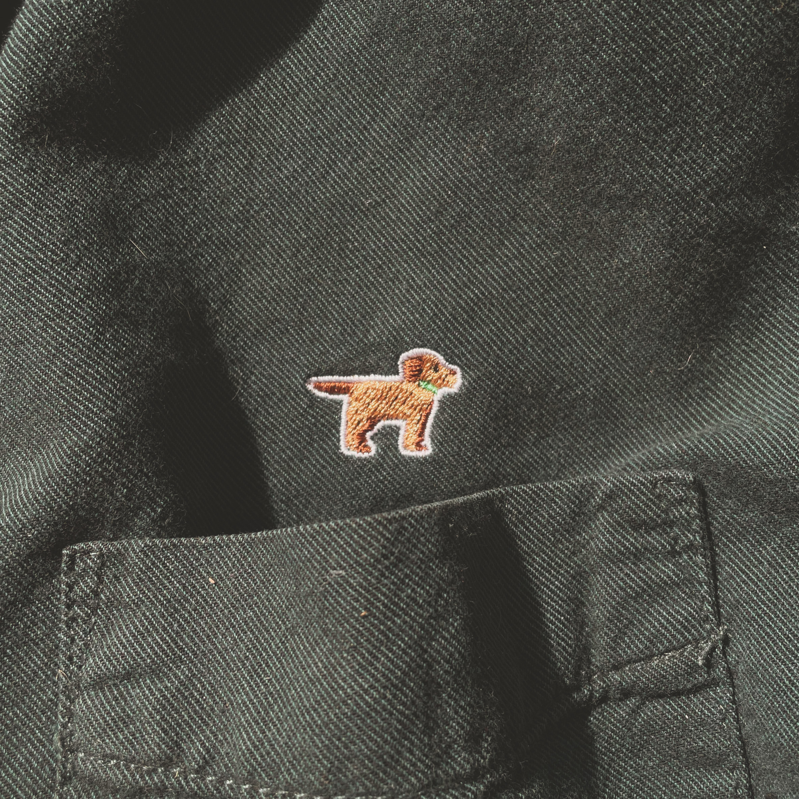
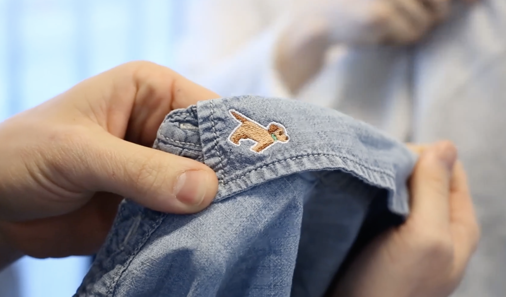

How to design better company-branded gear that's less wasteful, more fun, and more personal?
Company-branded swag can be fun to make and fun to receive. Unfortunately, it's often boring and almost always wasteful (how often does that logo-tshirt make it into regular rotation?). This project explored a better way.
The key design insight is that people already own things they like. Instead of putting the company logo on something nobody wants, we can put it on something they already own.
I art-directed, organized employees to bring in a wardrobe staple (that they already knew they liked), and coordinated with an embroidery studio that added a ~~little LaCoste crocodile~~ our office dog, Lenny.
The official logo at Wistia is two swooshes, which isn't nearly as endearing. Lenny is especially endearing, and a frequent star of videos. The art is by a talented illustrator on the design team, Michelle Fine.
As Director of Design at Wistia I had the opportunity to illustrate and art-direct many company-branded tees, totes, and stickers. Years later, the pair of socks with the little dogs on them is the only one I still love to wear.